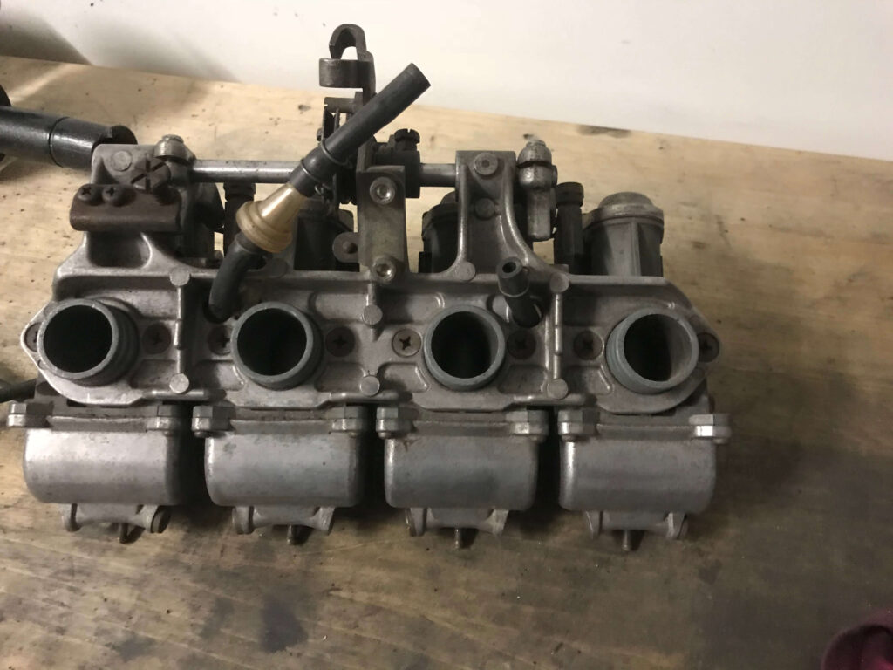
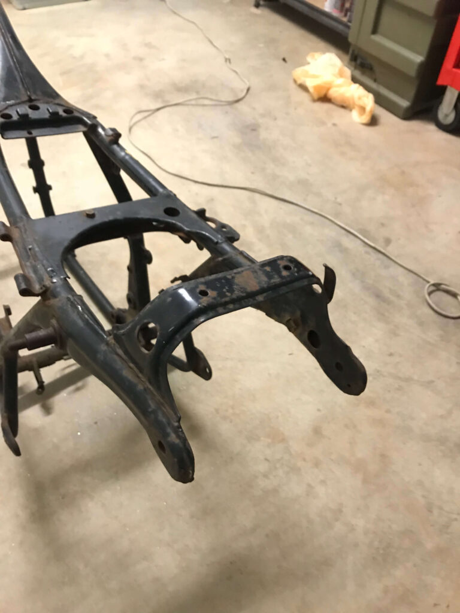
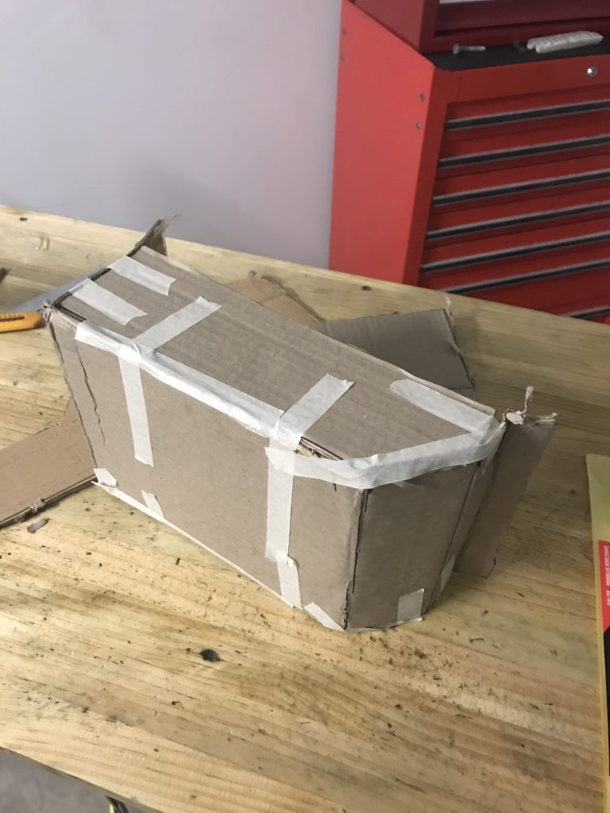

01
How to build a classic Honda cafe racer
The project, the inspiration and buying the partially disassembled Honda.

01 / 06Read ↗
Honda CB500 Four
01 / The beginning
What followed was a ground-up rebuild spanning the engine, carburettors, chassis, wheels and an entirely new electrical system.
02 / Systems
Instead of a purely chronological restoration, almost every system on the motorcycle became its own project.
03 / The build
01
The project, the inspiration and buying the partially disassembled Honda.
02
Wheels, suspension, components and figuring out how a 1970s Honda comes apart.


05
Cases, bearings, transmission, clutch, pistons, head and getting the inline-four back together.

I ended up learning how to rebuild an engine, lace wheels, fabricate brackets, restore carburettors and design an electrical system from scratch.
Mechanical · Fabrication · Electrical · Restoration